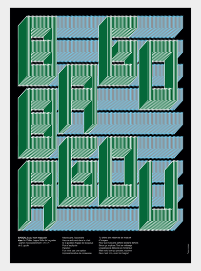
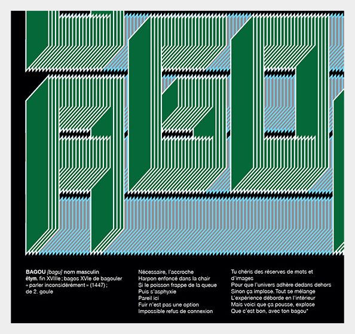

Dis Moi Dix Mots I 2017
Le Bagou est l’art de captiver de séduire verbalement son interlocuteur. Il est emprisonné dans un labyrinthe intellectuel où il ne peut s’en échapper.
mot de passe: bagou

Le Bagou est l’art de captiver de séduire verbalement son interlocuteur. Il est emprisonné dans un labyrinthe intellectuel où il ne peut s’en échapper.
mot de passe: bagou